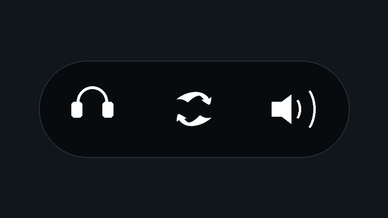

← BACK
AudioSwitcher
A lightweight, standalone audio device switching utility for Windows
Overview
AudioSwitcherは、Windows環境においてディスプレイ内蔵スピーカー、ヘッドセット、外部DACなどのオーディオ再生デバイスをグローバルショートカットキーによって瞬時にルーティング変更するための、実用性を重視した常駐型ユーティリティソフトです。コントロールパネルやタスクバーを開く煩わしさを排除し、あらゆるゲームプレイ中やワークスペース環境からシームレスな出力切り替えを実現します。
✨ Key Features
■ タスクバー完全同期型のフェード通知UI
デバイス切り替えがトリガーされると、デスクトップ最右下のタスクバー時計エリアに完全にオーバーレイする形でスムーズなフェードUI通知を表示。作業や画面描画を邪魔しない極限のミニマリズムを設計思想としています。
■ 同名デバイスの競合を完全に回避
Windows環境において多発する「同一製品名を持つオーディオデバイス」の誤認識問題を解決するため、Windows Core Audio API（pycaw）から各デバイス固有の永続的な識別子を直接取得して内部処理を行うため、外部ツールに頼らず100%正確なルーティングが維持されます。
■ 常駐化のインテリジェント自動登録
Windows起動時のスタートアップ登録ロジックを内蔵。スクリプト実行環境、またはコンパイルされた単一のバイナリ（EXE環境）を自動的に検出し、バックグラウンドでの安定稼働を即座に確立します。
📦 Package Structure
AudioSwitcher.exe— アプリケーション実行本体（デバイス制御まで単体で完結、外部ツール不要）
⚠️ Windows SmartScreenに関するご注意
本ツールは個人開発によるデジタル署名未付与のバイナリファイル（.exe）であるため、初回起動時にWindowsの保護警告が表示される場合があります。保存、起動は自己責任において行ってください。安全性確認のため、全ソースコードはGitHubで完全公開されています。